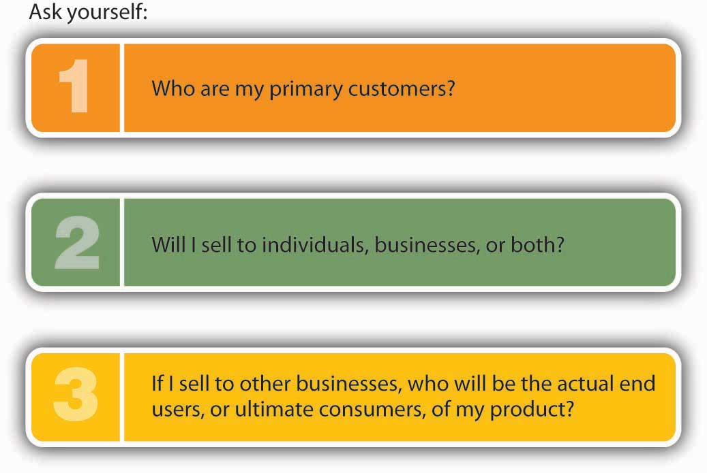
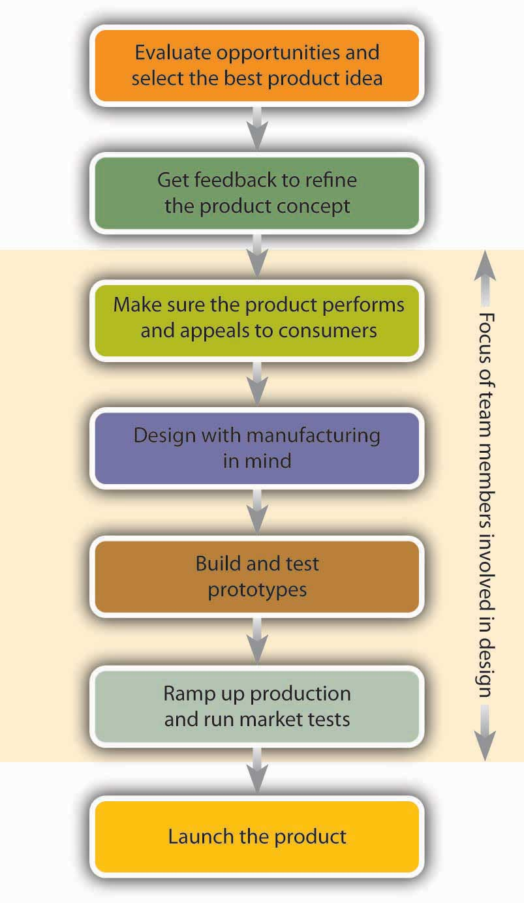

To see the PowerSki Jetboard in action, visit the company’s Web site at http://www.powerski.com. Watch the streaming videos that demonstrate what the Jetboard can do.
Have you ever wanted to go surfing but couldn’t find a body of water with decent waves? You no longer have a problem: the PowerSki Jetboard makes its own waves. This innovative product combines the ease of waterskiing with the excitement of surfing. A high-tech surfboard with a forty-five-horsepower, forty-five-pound watercraft engine, the PowerSki Jetboard has the power of a small motorcycle. Experienced surfers use it to get to the top of rising ocean waves, but if you’re just a weekend water-sports enthusiast, you can get your adrenaline going by skimming across the surface of a local lake at forty miles an hour. All you have to do is submerge the tail of the board, slide across on your belly, and stand up (with the help of a flexible pole). To innocent bystanders, you’ll look like a very fast water-skier without a boat.
Where do product ideas like the PowerSki Jetboard come from? How do people create products that meet customer needs? How are ideas developed and turned into actual products? How do you forecast demand for a product? How do you protect your product ideas? These are some of the questions that we’ll address in this chapter.
Basically, a productSomething that can be marketed to customers because it provides a benefit and satisfies a need. is something that can be marketed to customers because it provides them with a benefit and satisfies a need. It can be a physical good, such as the PowerSki Jetboard, or a service, such as a haircut or a taxi ride. The distinction between goods and services isn’t always clear-cut. Say, for example, that a company hires a professional to provide an in-house executive training program on “netiquette” (e-mail etiquette). Off the top of our heads, most of us would say that the company is buying a service. What if the program is offered online? We’d probably still argue that the product is a service. But what if the company buys training materials that the trainer furnishes on DVD? Is the customer still buying a service? Probably not: we’d have to say that when it buys the DVD, the company is buying a tangible good.
In this case, the product that satisfies the customer’s need has both a tangible component (the training materials on DVD) and an intangible component (the educational activities performed by the seller). Not surprisingly, many products have both tangible and intangible components. If, for example, you buy a Hewlett-Packard computer, you get not only the computer (a tangible good) but certain promises to answer any technical questions that you might have and certain guarantees to fix your computer if it breaks within a specified time period (intangible services).
New product developments can be grouped into four major categories: new-to-the-company, improvement of existing product, extension of product line, and new-to-the-market.
For examples of the first three types of new product developments, we’ll take a look at Just Born. The company is known for its famous “Marshmallow Peeps,” and consequently its management is very interested in marshmallows. It conducted research that revealed that families use marshmallows in lots of ways, including crafts and decorating. This led Just Born to develop an Easter decorating kit that used Peeps marshmallows. It was such a hit that the company followed by creating decorating kits for Halloween and the Christmas season. Because similar products are made by other companies, the decorating kits are not “new to the market” but are “new to the company.” Now, let’s look at another product development involving Just Born’s also famous Mike & Ike’s. The marketing people at Just Born discovered that teenagers prefer to buy candies that come in pouches (which fit into their pants pockets) rather than in small boxes. In response, the company reduced the piece size, added some new ingredients, and put the Mike & Ike’s in pouches. This “improvement in an existing product” resulted in a 20 percent annual sales jump for Mike & Ike’s. Our last look at Just Born demonstrates an approach used by the company to “extend its existing product line.” Most of us like chocolate and most of us also like marshmallow, so how about putting them together? This is just what Just Born did—the company extended its Peeps product line to include “Peeps in a chocolate egg.” Consumers loved the combination, and its success prompted the company to extend its product line again and launch a chocolate crispy version for Easter.
The PowerSki Jetboard is a “new-to-the-market product.” Before it was invented, no comparable product existed. Launching a new-to-the-market product is very risky, and only about 10 percent of products created fall into this category. On a positive note, introducing a new product to the market can be very profitable, because the product often enjoys a temporary monopolistic position.
Inventors of new-to-the-market products often form entrepreneurial start-ups to refine their product idea and bring it to market. This was the path taken by Bob Montgomery, inventor of the PowerSki Jetboard. As is typical of entrepreneurial start-ups, the company that Montgomery founded has these characteristics:See Mary Coulter, Entrepreneurship in Action (Upper Saddle River, NJ: Prentice Hall, 2001), 9–11.
As Montgomery learned, the introduction of an innovative product to the market is more unpredictable, and thus more risky, than the introduction of a market-tested product. Starting up a store to sell an improved version of an existing surfboard entails one level of risk; starting up a business to market the first motorized surfboard entails quite another. Even though the introduction of new-to-the-market products are more risky, some of this risk can be avoided. What if, for example, Montgomery had brought the Jetboard to market only to discover that many of the buyers in his target market—water-sports enthusiasts—couldn’t easily maneuver the Jetboard? We could then say that he took an unnecessarily risky step in bringing his product to market, but we could also say that he simply attempted to market his product without adequate information. Surely a little research would have alerted Montgomery to the probable consequences of his decision to go to market when he did and with his product in its current state of development.
A couple of final words, therefore, about introducing an entirely new product to the market. First, this type of product introduction is about carefully calculated risks, not unnecessary risks. Second, though little is certain in the entrepreneurial world, most decision making can be improved with input from one or both of two sources:
Again, you can’t be certain about any results, but remember that uncertainty reflects merely the lack of complete knowledge or information; thus, the more knowledge and information that you can bring to bear on a situation, the less uncertain—and the less risky—the decision becomes.See Mary Coulter, Entrepreneurship in Action (Upper Saddle River, NJ: Prentice Hall, 2001), 9, 206–207. In short, always do your homework, and if you’re new to entrepreneurship or to your market, make it a point to work with people who know from experience what they’re talking about.
Four characteristics of the entrepreneurial start-up are:
Entrepreneurship is about carefully calculated risks, not unnecessary risks. Most entrepreneurial decision making can be improved with input from one or both of two sources:
(AACSB) Analysis
Identify a good or a service for each of the following product development categories: new-to-the-market, new-to-the-company, improvement of existing product, and extension of product line. To come up with the products, you might visit a grocery store or a mall. Don’t use the Just Born examples presented in the chapter.
For some people, coming up with a great product idea is a gratifying adventure. For most, however, it’s a daunting task. The key to coming up with a product idea is identifying something that customers want—or, perhaps more important, filling an unmet customer need. In coming up with a product idea, ask not “what do I want to sell?” but rather “what does the customer want to buy?”Scott Thurm and Joann S. Lublin, “Peter Drucker’s Legacy Includes Simple Advice: It’s All about the People,” Wall Street Journal (November 14, 2005, B1, http://home.ubalt.edu/tmitch/641/WSJ_com%20-%20Peter%20Drucker%27s%20Legacy.htm (accessed October 29, 2011). With this piece of advice in mind, let’s get back to the task of coming up with a product idea. Nobel Prize–winning chemist Linus Pauling suggested that “the best way to have a good idea is to have lots of ideas,” and though this notion might seem a little whimsical at first, it actually makes a lot of sense, especially if you’re trying to be innovative in the entrepreneurial sense. Every year, for example, companies launch about thirty thousand new food, beverage, and beauty products, and up to 90 percent fail within a year.“New Product Launch Program,” Catalina, http://www.catalinaconnections.com/products/new_product_launch.html (accessed October 30, 2011); Philip Kotler and Gary Armstrong, Principles of Marketing, 12th ed. (Upper Saddle River, NJ: Pearson Education, 2008), 253. You might need ten good ideas just to have one that stands a chance.
So where do these ideas come from? Product ideas can originate from almost anywhere. How many times have you looked at a product that just hit the market and said, “I could have thought of that”? Just about anybody can come up with a product idea; basically, you just need a little imagination. Success is more likely to result from a truly remarkable product—something that grabs the attention of consumers. Entrepreneur and marketing consultant Seth Godin refers to truly remarkable products as “purple cows.”Seth Godin, Purple Cow: Transform Your Business by Being Remarkable (New York: Penguin Group, 2003). He came up with the term while driving through the countryside one day. As he drove along, his interest was attracted by the hundreds of cows dotting the countryside. After a while, however, he started to ignore the cows because looking at them had become tedious. For one thing, they were all brown, and it occurred to him that a glimpse of a purple cow would be worth writing home about. People would tend to remember a purple cow; in fact, they might even want one.
Who thinks up “purple cow” ideas? Where do the truly remarkable business ideas come from? As we pointed out in an earlier chapter, entrepreneurs and small business owners are a rich source of new product ideas (according to the Small Business Administration, 55 percent of all new product innovations come from small businesses). Take Dean Kamen, inventor of the Segway Human Transporter, a battery-operated vehicle that responds to the rider’s movements: lean forward and you can go straight ahead at 12.5 miles per hour; to stop, just tilt backward. This revolutionary product is only one of Kamen’s many remarkable business ideas. He invented his first product—a wearable infusion pump for administering chemotherapy and other drugs—while he was still a college undergraduate.See “Discover the Segway HT Revolution,” Segway, http://www.segway.com/segway (accessed October 29, 2011); “Segway HT,” The Great Idea Finder, http://www.ideafinder.com/history/inventions/story089.htm (accessed May 11, 2006). Jacob Dunnack is also getting an early entrepreneurial start. At age six, Jacob became frustrated one day when he took his baseball bat to his grandmother’s house but forgot to take some baseballs as well. His solution? A hollow baseball bat that holds baseballs. Dunnack’s invention, now called the JD Batball, was quickly developed and sold in stores such as Toys “R” Us.See “The JD Batball,” The Great Idea Finder, http://www.ideafinder.com/history/inventions/jdbatball.htm (accessed October 29, 2011); “Molds Designer Uses SolidWorks Software to Make 8-Year-Old’s Dream a Reality,” SolidWorks Express, http://www.solidworks.com/swexpress/jan/200201_feature_04.html (accessed October 29, 2011).
Why do so many entrepreneurs and small businesspeople come up with so many purple cows? For one thing, entrepreneurs are often creative people; moreover, they’re often willing to take risks. This is certainly true of Bob Montgomery, inventor of the PowerSki Jetboard (which undoubtedly qualifies as a purple cow). With more than twenty years’ experience in the water-sports industry and considerable knowledge of the personal-watercraft market, Montgomery finally decided to follow his long-cherished dream of creating an entirely new and conceptually different product—one that would offer users ease of operations, high performance, speed, and quality. His creative efforts have earned him the prestigious Popular Science “Best of What’s New” award.“Awards and Media,” PowerSki Jet boards, http://www.powerski.com/content/psi_index.php (accessed October 29, 2011).
To remain competitive, medium and large organizations alike must also identify product development opportunities. Many companies actively solicit product ideas from people inside the organization, including marketing, sales, research, and manufacturing personnel, and some even establish internal “entrepreneurial” units. Others seek product ideas from outside the organization by talking to customers and paying attention to what the competition is doing. In addition to looking out for new product ideas, most companies constantly seek out ways to make incremental improvements in existing products by adding features that will broaden their consumer appeal. As you can see from Figure 10.2 "Sales from New Products", the market leaders in most industries are the firms that are most successful at developing new products.
Figure 10.2 Sales from New Products

A novel approach to generating new-to-the-world product ideas is hiring “creativity” consultants. One of the best is Doug Hall, who’s been called “America’s Number 1 Idea Guru.” At a Cincinnati idea factory called Eureka!Ranch, Hall and other members of his consulting firm specialize in helping corporate executives get their creative juices flowing.See Eureka!Ranch at http://www.eurekaranch.com, (accessed October 29, 2011). Hall’s job is getting people to invent products that make a real difference to consumers, and his strategies are designed to help corporate clients become more innovative—to jump-start their brains. As Hall puts it, “You have to swing to hit home runs.”“Success Calls for Creativity,” CNN Money, February 4, 1997, http://money.cnn.com/1997/02/04/busunu/intv_hall (accessed October 29, 2011). Eureka!Ranch’s client list includes Disney, Kellogg, Johnson & Johnson, and Procter & Gamble, as well as a number of budding entrepreneurs. Hall boasts that the average home uses eighteen goods or services that the Ranch helped shape, and if he’s right, you yourself have probably benefited from one of the company’s idea-generating sessions.“Why Eureka,” Eureka!Ranch, http://eurekaranch.com/ (accessed October 29, 2011).
(AACSB) Analysis
The “Strange New Products” Web site brags that it displays the “weirdest, funniest, stupidest, and [most] ingenious new products entering the marketplace.” This seems to be an accurate statement. Visit the site (http://www.strangenewproducts.com) and do the following:
An idea turns into a business opportunity when it has commercial potential—when you can make money by selling the product. But needless to say, not all ideas generate business opportunities. Consider these products that made the list of the “Top 25 Biggest Product Flops of All Time”:WalletPop, “Top 25 Biggest Product Flops of All Time,” http://www.dailyfinance.com/photos/top-25-biggest-product-flops-of-all-time/ (accessed October 29, 2011).
Remember: being in business is not about you—it’s about the customer. Successful businesspeople don’t ask themselves “What do I want to sell?” but rather “What does the customer want to buy?” Customers buy products to fill unmet needs and because they expect to derive some value or utility from them. People don’t buy Alka-Seltzer because they like the taste or even because the price is right: they buy it because it makes their indigestion go away. They don’t shop at Amazon.com because the Web site is entertaining: they shop there because they want their purchases delivered quickly. The realization that this kind of service would meet customer needs made Amazon.com a genuine business opportunity.
Products provide customers with four types of utility or benefit:
How can you decide whether an idea provides utility and has the potential to become a business opportunity? You should start by asking yourself the questions in Figure 10.4 "When Is an Idea a Business Opportunity?": if you can’t come up with good answers to these questions, you probably don’t have a highly promising product. On the other hand, if you conclude that you have a potential product for which people would pay money, you’re ready to take the next step: analyze the market to see whether you should go forward with the development of the product.
Figure 10.4 When Is an Idea a Business Opportunity?

(AACSB) Analysis
Provide two examples of each of the four types of utility: time, place, ownership, and form. Don’t use the examples given in the book.
Before you invest a lot of time and money to develop a new product, you need to understand the industry in which it’s going to be sold. As inventor of the PowerSki Jetboard, Bob Montgomery had the advantage of being quite familiar with the industry that he proposed to enter. With more than twenty years’ experience in the water-sports and personal-watercraft industry, he felt at home in this business environment. He knew who his potential customers were, and he knew who his competitors were. He had experience in marketing similar products, and he was familiar with industry regulations.
Most people don’t have the same head start as Montgomery. So, how does the average would-be businessperson learn about an industry? What should you want to know about it? Let’s tackle the first question first.
Before you can study an industry, you need to know what industry to study. An industryGroup of businesses that compete with one another to market products that are the same or similar. is a group of related businesses: they do similar things and they compete with each other. In the footwear industry, for example, firms make footwear, sell it, or both. Players in the industry include Nike and Adidas, both of which specialize in athletic footwear; but the industry is also sprinkled with companies like Candies (which sells young women’s fashion footwear) and Florsheim (quality men’s dress shoes).
Let’s say that you want to know something about the footwear industry because your potential purple cow is a line of jogging shoes designed specifically for older people (those over sixty-five) who live in the Southeast. You’d certainly need a broad understanding of the footwear industry, but would general knowledge be enough? Wouldn’t you feel more comfortable about pursuing your idea if you could focus on a smaller segment of the industry—namely, the segment that specializes in products similar to the one you plan to sell? Here’s a method that will help you narrow your focus.This approach is adapted from Kathleen Allen, Entrepreneurship for Dummies (Foster, CA: IDG Books, 2001), 73–77.
Begin with the overall industry—in this case, the footwear industry. Within this industry, there are several groups of customers, each of which is a marketGroup of buyers or potential buyers who share a common need that can be met by a certain product.. You’re interested in the consumer market—retail customers. But this, too, is a fairly broad market; it includes everybody who buys shoes at retail. Your next step, then, is to subdivide this market into smaller market segmentsGroup of potential customers with common characteristics that influence their buying decisions.—groups of potential customers with common characteristics that influence their buying decisions. You can use a variety of standard characteristics, including demographics (age, sex, income), geography (region, climate, city size), and psychographics (lifestyle, activities, interests). The segment you’re interested in consists of older people (a demographic variable) living in the Southeast (a geographic variable) who jog (a psychographic variable). Within this market segment, you might want to subdivide further and find a nicheNarrowly defined group of potential customers with a fairly specific set of needs.—an unmet need. Your niche might turn out to be providing high-quality jogging shoes to active adults living in retirement communities in Florida.
The goal of this process is to identify progressively narrower sectors of a given industry. You need to become familiar with the whole industry—not only with the footwear industry but also with the retail market for jogging shoes designed for older people. You also need to understand your niche market, which consists of older people who live active lives in Florida.
Now that we know something about the process of focusing in on an industry, let’s look at another example. Suppose that your product idea is offering dedicated cruises for college students. You’d begin by looking at the recreational-activities industry. Your market would be people who travel for leisure, and within that market, you’d focus on the market segment consisting of people who take cruises. Your niche would be college students who want to take cruises.
Now that you’ve identified your industry and its various sectors, you’re ready to consider such questions as the following:See Kathleen Allen, Entrepreneurship for Dummies (Foster, CA: IDG Books, 2001), 67.
Where do you find answers to questions such as these? A good place to start is by studying your competitors: Who are their customers? What products do they sell? How do they price their products? How do they market them? How do they treat their customers? Do they seem to be operating successfully? Observe their operations and buy their goods and services. Search for published information on your competitors and the industry. For example, there’s a great deal of information about companies on the Internet, particularly in company Web sites. The Internet is also a good source of industry information. Look for the site posted by the industry trade association. Find out whether it publishes a magazine or other materials. Talk with people in the industry—business owners, managers, suppliers; these people are usually experts. And talk with customers. What do they like or dislike about the products that are currently available? What benefits are they looking for? What benefits are they getting?
(AACSB) Analysis
To introduce a successful new service, you should understand the industry in which you’ll be offering the service. Select a service business that you’d like to run and explain what information you’d collect on its industry. How would you find it?
It goes without saying, but we’ll say it anyway: without enough customers, your business will go nowhere. So, before you delve into the complex, expensive world of developing and marketing a new product, ask yourself questions like those in Figure 10.5 "When to Develop and Market a New Product". When Bob Montgomery asked himself these questions, he concluded that he had two groups of customers for the PowerSki Jetboard: (1) the dealerships that would sell the product and (2) the water-sports enthusiasts who would buy and use it. His job, therefore, was to design a product that dealers would want to sell and enthusiasts would buy. When he was confident that he could satisfy these criteria, he moved forward with his plans to develop the PowerSki Jetboard.
Figure 10.5 When to Develop and Market a New Product
After you’ve identified a group of potential customers, your next step is finding out as much as you can about what they think of your product idea. Remember: because your ultimate goal is to roll out a product that satisfies customer needs, you need to know ahead of time what your potential customers want. Precisely what are their unmet needs? Ask them questions such as these:Karl Ulrich and Steven Eppinger, Product Design and Development, 2nd ed. (New York: Irwin McGraw-Hill, 2000), 66; and Kathleen Allen, Entrepreneurship for Dummies (Foster, CA: IDG Books, 2001), 79.
Before making a substantial investment in the development of a product, you need to ask yourself yet another question: are there enough customers willing to buy my product at a price that will allow me to make a profit? Answering this question means performing one of the hardest tasks in business: forecasting demand for your proposed product. There are several possible approaches to this task that can be used alone or in combination.
Though some businesspeople are reluctant to share proprietary information, such as sales volume, others are willing to help out individuals starting new businesses or launching new products. Talking to people in your prospective industry (or one that’s similar) can be especially helpful if your proposed product is a service. Say, for example, that you plan to open a pizza parlor with a soap opera theme: customers will be able to eat pizza while watching reruns of their favorite soap operas on personal TV/DVD sets. If you visited a few local restaurants and asked owners how many customers they served every day, you’d probably learn enough to estimate the number of pizzas that you’d serve during your first year. If the owners weren’t cooperative, you could just hang out and make an informal count of the customers.
You can also learn a lot by talking with potential customers. Ask them how often they buy products similar to the one you want to launch. Where do they buy them and in what quantity? What factors affect demand for them? If you were contemplating a frozen yogurt store in Michigan, it wouldn’t hurt to ask customers coming out of a bakery whether they’d buy frozen yogurt in the winter.
To get some idea of the total market for products like the one you want to launch, you might begin by examining pertinent industry research. For example, to estimate demand for jogging shoes among consumers sixty-five and older, you could look at data published on the industry association’s Web site, National Sporting Goods Association, http://www.nsga.org/i4a/pages/index.cfm?pageid=1.“Running USA: Running Defies The Great Recession, Running USA's State of the Sport 2010—Part II,” LetsRun.com, http://www.letsrun.com/2010/recessionproofrunning0617.php (accessed October 28, 2011); “Sporting Goods Market in 2010,” National Sporting Goods Association, http://www.nsga.org/i4a/pages/index.cfm?pageid=1 (accessed October 28, 2011). Here you’d find that forty million jogging/running shoes were sold in the United States in 2008 at an average price of $58 per pair. The Web site also reports that the number of athletes who are at least forty and who participate in road events increased by more than 50 percent over a ten year period.“Long Distance Running: State of the Sport,” USA Track & Field, http://www.usatf.org/news/specialReports/2003LDRStateOfTheSport.asp (accessed October 29, 2011). To find more specific information—say, the number of joggers older than sixty-five—you could call or e-mail USA Track and Field. You might find this information in an eighty-seven-page statistical study of retail sporting-goods sales published by the National Sporting Goods Association.National Sporting Goods Association, http://nsga.org (accessed October 28, 2011). If you still don’t get a useful answer, try contacting organizations that sell industry data. American Sports Data, for instance, provides demographic information on no fewer than twenty-eight fitness activities, including jogging.“Trends in U.S. Physical Fitness Behavior (1987–Present),” http://www.americansportsdata.com/phys_fitness_trends1.asp (accessed October 28, 2011). You’d want to ask them for data on the number of joggers older than sixty-five living in Florida. There’s a lot of valuable and available industry-related information that you can use to estimate demand for your product.
Now, let’s say that your research turns up the fact that there are three million joggers older than sixty-five and that six hundred thousand of them live in Florida, which attracts 20 percent of all people who move when they retire.Alan Scher Zagier, “Eyeing Competition, Florida Increases Efforts to Lure Retirees,” Boston Globe, December 26, 2003, http://www.boston.com/news/nation/articles/2003/12/26/eyeing_competition_florida_increases_efforts_to_lure_retirees (accessed October 28, 2011). How do you use this information to estimate the number of jogging shoes that you’ll be able to sell during your first year of business? First, you have to estimate your market shareCompany’s portion of the market that it has targeted.: your portion of total sales in the older-than-sixty-five jogging shoe market in Florida. Being realistic (but having faith in an excellent product), you estimate that you’ll capture 2 percent of the market during your first year. So you do the math: 600,000 pairs of jogging shoes sold in Florida × 0.02 (a 2 percent share of the market) = 12,000, the estimated first-year demand for your proposed product.
Granted, this is just an estimate. But at least it’s an educated guess rather than a wild one. You’ll still want to talk with people in the industry, as well as potential customers, to hear their views on the demand for your product. Only then would you use your sales estimate to make financial projections and decide whether your proposed business is financially feasible. We’ll discuss this process in a later chapter.
(AACSB) Analysis
Your friends say you make the best pizzas they’ve ever eaten, and they’re constantly encouraging you to set up a pizza business in your city. You have located a small storefront in a busy section of town. It doesn’t have space for an eat-in restaurant, but it will allow customers to pick up their pizzas. You will also deliver pizzas. Before you sign a lease and start the business, you need to estimate the number of pizzas you will sell in your first year. At this point you plan to offer pizza in only one size.
Before arriving at an estimate, answer these questions:
Then, estimate the number of pizzas you will sell in your first year of operations.
Forecasting sales of shoes has started you thinking. Selling twelve thousand pair of shoes the first year you run the business sounds great, but you still need to find an answer to the all-important question: are there enough customers willing to buy my jogging shoes at a price that will allow me to make a profit? Is there some way to figure out the level of sales I would need to avoid losing money—to “break even”? Fortunately, an accountant friend of yours informs you that there is. Not surprisingly, it’s called breakeven analysisMethod of determining the level of sales at which the company will break even (have no profit or loss)., and here’s how it works: to break even (have no profit or loss), total sales revenue must exactly equal all your expenses (both variable and fixed). To determine the level of sales at which this will occur, you need to do the following:
Determine your total fixed costsCosts that don’t change when the amount of goods sold changes., which are so called because the total cost doesn’t change as the quantity of goods sold changes:
Identify your variable costsCosts that vary, in total, as the quantity of goods sold changes but stay constant on a per-unit basis.. These are costs that vary, in total, as the quantity of goods sold changes but that stay constant on a per-unit basis. State variable costs on a per-unit basis:
Determine your contribution margin per unitExcess of revenue per unit over variable cost per unit.: selling price per unit less variable cost per unit:
Calculate your breakeven point in unitsNumber of sales units at which net income is zero.: fixed costs ÷ contribution margin per unit:
Your calculation means that if you sell 8,571 pairs of shoes, you will end up with zero profit (or loss) and will exactly break even.
If your sales estimate is realistic (a big “if”), then you should be optimistic about starting the business. All your fixed costs will be covered once you sell 8,571 pairs of shoes. Any sales above that level will be pure profit. So, if you sell your expected level of twelve thousand pairs of shoes, you’ll make a profit of $120,015 for the first year. Here’s how we calculated that profit:
As you can see, breakeven analysis is pretty handy. It allows you to determine the level of sales that you must reach to avoid losing money and the profit you’ll make if you reach a higher sales goal. Such information will help you plan for your business.
(AACSB) Analysis
For the past ten years, you’ve worked at a PETCO Salon as a dog groomer. You’re thinking of starting your own dog grooming business. You found a place you could rent that’s right next to a popular shopping center, and two of your friends (who are also dog groomers) have agreed to work for you. The problem is that you need to borrow money to start the business and your banker has asked for a breakeven analysis. You have prepared the following cost estimates for your first year of operations:
| Fixed Costs | |
|---|---|
| Salaries | $105,000 |
| Rent and utilities | $36,000 |
| Advertising | $2,000 |
| Equipment | $3,000 |
| Variable Cost per Dog | |
|---|---|
| Shampoo | $2.00 |
| Coat conditioner | $1.50 |
| Pet cologne | $0.75 |
| Dog treats | $1.25 |
| Hair ribbons | $0.50 |
You went online and researched grooming prices in your area. Based on your review, you have decided to charge $32 for each grooming.
Part 1:
Part 2:
Part 3:
Like PowerSki, every organization—whether it produces goods or provides services—sees Job 1 as furnishing customers with quality products. The success of a business depends on its ability to identify the unmet needs of consumers and to develop products that meet those needs at a low cost.Karl Ulrich and Steven Eppinger, Product Design and Development, 2nd ed. (New York: Irwin McGraw-Hill, 2000), 3. In other words, effective product development results in goods and services that can be sold at a profit. In addition, it results in high-quality products that not only satisfy consumer needs but also can be developed in a timely, cost-efficient manner. Accomplishing these goals entails a collaborative effort by individuals from all areas of an organization: operations management (including representatives from engineering, design, and manufacturing), marketing, accounting, and finance. In fact, companies increasingly assign representatives from various functional areas who work together as a project teamIndividuals from different functional areas assigned to work together throughout the product development process. throughout the product development processes. This approach allows individuals with varied backgrounds and experience to provide input as the product is being developed.
Not surprisingly, developing profitable products is difficult, and the success rate is low. On average, for every successful product, a company has twelve failures. At this rate, the firms on the Fortune 1000 list waste over $60 billion a year in research and development.Tony Ulwick and John A. Eisenhauer, “Predicting the Success or Failure of a New Product Concept,” The Management Roundtable,http://www.roundtable.com/Event_Center/I@WS/I@WS_paper3.html (accessed May 11, 2006). There are several reasons why product development is such a risky proposition:
Even so, organizations continue to dedicate immense resources to developing new products. Your supermarket, for example, can choose from about one hundred thousand items to carry on its shelves—including twenty thousand new products every year. Unfortunately, the typical supermarket can stock only thirty thousand products.Steve Hannaford, “Slotting Fees and Oligopolies,” http://www.oligopolywatch.com/2003/05/08.html (accessed May 11, 2006).
Even the mighty Coca-Cola has had its share of failures—New Coke, anyone?
The product development processSeries of activities by which a product idea is transformed into a final product. is a series of activities by which a product idea is transformed into a final product. It can be broken down into the seven steps summarized in Figure 10.6 "The Product Development Process".
Figure 10.6 The Product Development Process
If you’re starting your first business, you might have only one product idea. But existing organizations often have several ideas for new products, as well as improvements to existing ones. Where do they come from? They can come from individuals within the organization or from outside sources, such as customers. Typically, various ideas are reviewed and evaluated by a team of individuals, who identify the most promising ideas for development. They may rely on a variety of criteria: Does the proposed product fill an unmet need of our customers? Will enough people buy our product to make it commercially successful? Do we have the resources and expertise to make it?
From the selected product idea, the team generates an initial product conceptDescription of what a new product will look like and how it will work. that describes what the product might look like and how it might work. Members talk both with other people in the organization and with potential buyers to identify customer needs and the benefits that consumers will get from the product. They study the industry in which the product will be sold and investigate competing products. They brainstorm various product designs—that is, the specifications for how the product is to be made, what it’s to look like, and what performance standards it’s to meet.
Based on information gathered through this process, the team will revise the product concept, probably pinpointing several alternative models. Then they’ll go back to potential customers and get their feedback on both the basic concept and the various alternatives. Based on this feedback, the team will decide what the product will look like, how it will work, and what features it will have.
The team then decides how the product will be made, what components it will require, and how it will be assembled. It will decide whether the product should be made in-house or outsourced to other companies. For products to be made in-house, the team determines where parts will be obtained. During this phase, team members are involved in design work to ensure that the product will be appealing, safe, and easy to use and maintain.
As a rule, there’s more than one way to make any product, and some methods are more expensive than others. During the next phase, therefore, the team focuses its attention on making a high-quality product at the lowest possible cost, working to minimize the number of parts and simplify the components. The goal is to build both quality and efficiency into the manufacturing process.
A prototypePhysical model of a new product. is a physical model of the product. In the next phase, prototypes are produced and tested to make sure that the product meets the customer needs that it’s supposed to. The team usually begins with a preliminary prototype from which, based on feedback from potential customers, a more sophisticated model will then be developed. The process of building and testing prototypes will continue until the team feels comfortable that it has fashioned the best possible product. The final prototype will be extensively tested by customers to identify any changes that need to be made before the finished product is introduced.
During the production ramp-up stageStage in the product development process during which employees are trained in necessary production processes and new products are tested., employees are trained in manufacturing and assembly processes. Products turned out during this phase are carefully inspected for residual flaws. Samples are often demonstrated or given to potential customers for testing and feedback.
In the final stage, the firm starts ongoing production and makes the product available for widespread distribution.
This process can be broken down into seven steps:
(AACSB) Analysis
Use your imagination to come up with a hypothetical product idea. Now, identify the steps you’d take to design, develop, and bring your product to market.
You can protect your rights to your idea with a patentGrant of the exclusive right to produce or sell a product, process, or invention. from the U.S. Patent and Trademark Office, which grants you “the right to exclude others from making, using, offering for sale, or selling” the invention in the United States for twenty years.U.S. Patent and Trademark Office, http://www.uspto.gov/web/patents/howtopat.htm (accessed October 28, 2011).
What do you need to know about applying for a patent? For one thing, document your idea as soon as you think of it. Simply fill out a form, stating the purpose of your invention and the current date. Then sign it and get someone to witness it. The procedure sounds fairly informal, but you may need this document to strengthen your claim that you came up with the idea before someone else who also claims it. Later, you’ll apply formally for a patent by filling out an application (generally with the help of a lawyer), sending it to the U.S. Patent and Trademark Office, and waiting. Nothing moves quickly through the U.S. Patent and Trademark Office, and it takes a long time for any application to get through the process.
Will your application get through at all? There’s a good chance if your invention meets all the following criteria:
Applying for a U.S. patent is only the first step. If you plan to export your product outside the United States, you’ll need patent protection in each country in which you plan to do business, and as you’ve no doubt guessed, getting a foreign patent isn’t any easier than getting a U.S. patent. The process keeps lawyers busy: during a three-year period, PowerSki International had to take out more than eighty patents on the PowerSki Jetboard. It still has a long way to go to match the number of patents issued to some extremely large corporations. Microsoft, for example, recently obtained its ten thousandth patent.Ina Fried, “Microsoft Gets 10,000th Patent,” CNET News, http://news.cnet.com/8301-13860_3-10157884-56.html (accessed October 28, 2011).
Clearly, the patent business is booming. The U.S. Patent and Trademark Office issued more than a half million patents in 2010.U.S. Patent and Trademark Office, http://www.uspto.gov/web/offices/com/iip/index.htm (accessed October 29, 2011). One reason for the recent proliferation of patents is the high-tech boom: over the last decade, the number of patents granted has increased by more than 50 percent.
(AACSB) Analysis
A friend of yours described a product idea she had been working on. It is a child’s swing set with a sensor to stop the swing if anyone walks in front of it. She came to you for advice on protecting her product idea. What questions would you need to ask her to determine whether her product idea is patentable? How would she apply for a patent? What protection would the patent give her? How long would the patent apply?
Breaking Even on Burgers
You and your business partner plan to open a gourmet burger restaurant. Your partner estimated the new business will sell a hundred fifty thousand burgers during its first year and a half of operations. You want to determine the number of burgers you must sell to break even during this period.
Here are the figures you know so far:
Part 1: Using the previous information, manually calculate the breakeven number of burgers. How close is the breakeven number of burgers to your partner’s sales estimate of one hundred fifty thousand burgers? How confident are you that your restaurant will be profitable?
Part 2: Now, recalculate the breakeven number of burgers using a higher selling price. Pretend that your likely customers are burger fanatics and will pay $2.79 for a burger (rather than $1.99). Also pretend that the variable cost for each burger and your fixed costs won’t change (variable cost per burger is still $0.97 and fixed costs are still $140,000). Manually calculate the number of burgers you must sell to break even at this higher selling price. Are you now more confident that the business will succeed?
Part 3: Without recalculating breakeven, answer these two questions:
Being a “Big Idea” Person
Imagine a career in which you design the products people use every day. If you’re a “big idea” person, have an active imagination, have artistic flair, and possess the ability to understand how products function, then a career in product design and development might be for you. To learn what opportunities are available in this field, go to the Job Bank section of the Product Development and Management Association’s Web site (http://www.pdma.org/job_bank.cfm) and click on “View Posted Jobs.” Explore the various job openings by clicking on a position (to highlight it); and then clicking on the “View Job Details” button at the bottom of the screen. Find a position that interests you and look for answers to these questions:
Who’s Getting Fat from Fast Food?
Product liability laws cover the responsibility of manufacturers, sellers, and others for injuries caused by defective products. Under product liability laws, a toy manufacturer can be held liable if a child is harmed by a toy that’s been marketed with a design flaw. The manufacturer can also be held liable for defects in marketing the toy, such as giving improper instructions on its use or failing to warn consumers about potential dangers. But what if the product isn’t a toy, but rather a fast-food kid’s meal? And what if the harm isn’t immediately obvious but emerges over time?
These questions are being debated in the legal and health professions (and the media). Some people believe that fast-food restaurants should be held responsible (at least in part) for childhood obesity. They argue that fast-food products—such as kids’ meals made up of high-calorie burgers, fried chicken fingers, French fries, and sugary soft drinks—are helping to make U.S. children overweight. They point out that while restaurant chains spend billions each year to advertise fast food to children, they don’t do nearly enough to warn parents of the dangers posed by such foods. On the other side of the debate are restaurant owners, who argue that they’re not the culprits. They say that their food can be a part of a child’s diet—if it’s eaten in moderation.
There’s no disputing that 15 percent of American children are obese and that fast-food consumption by children has increased by 500 percent since 1970. Most observers also accept the data furnished by the U.S. Surgeon General: that obesity in the United States claims some three hundred thousand lives a year and costs $117 billion in health care. The controversy centers on the following questions:
What’s your opinion? If you owned a fast-food restaurant, what action (if any) would you take in response to the charges leveled by critics of your industry?
The Great Idea
Get together with members of your team and brainstorm ideas for a new-to-the-market product. Begin the brainstorming session by asking each person to write an idea on a sticky note. Post the idea and repeat the process four times. After the team has evaluated and discussed the ideas, all members should vote. Each gets ten votes, which can be placed on one idea or spread over many. Once the voting ends, add up the votes received by each idea and declare one idea the winner.
Write a group report that answers the following questions:
Product Idea
Industry
Product
What to Do When the “False” Alarm Goes Off
If someone on the street tried to sell you a “Rolex” watch for $20, you’d probably suspect that it’s a fake. But what about a pair of New Balance athletic shoes? How do you know they’re authentic? How can you tell? Often you can’t. Counterfeiters are getting so good at copying products that even experts have trouble telling a fake from the real thing. What if the counterfeit product in question was a prescription drug? Even worse, what if it had been counterfeited with unsterile equipment or contained no active ingredients?
How likely is it that you’ll buy a counterfeit product in the next year? Unfortunately, it’s very likely. To learn a little more about the global counterfeiting business, go to the BusinessWeek and Washington Post Web sites. Read the BusinessWeek article “Fakes!” (http://www.businessweek.com/magazine/content/05_06/b3919001_mz001.htm) and the Washington Post article “Counterfeit Goods That Trigger the ‘False’ Alarm” (http://www.highbeam.com/doc/1P2-4576.html). After you read these articles, answer the following questions: